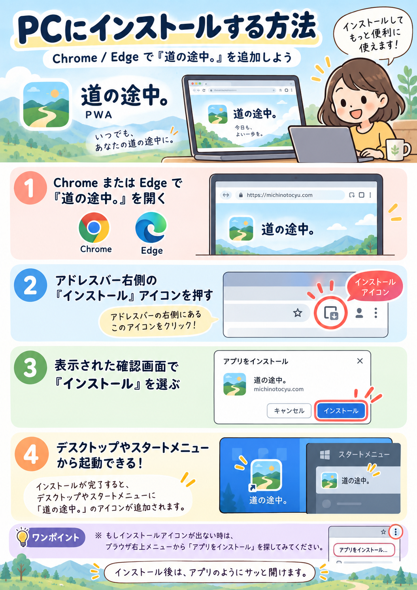
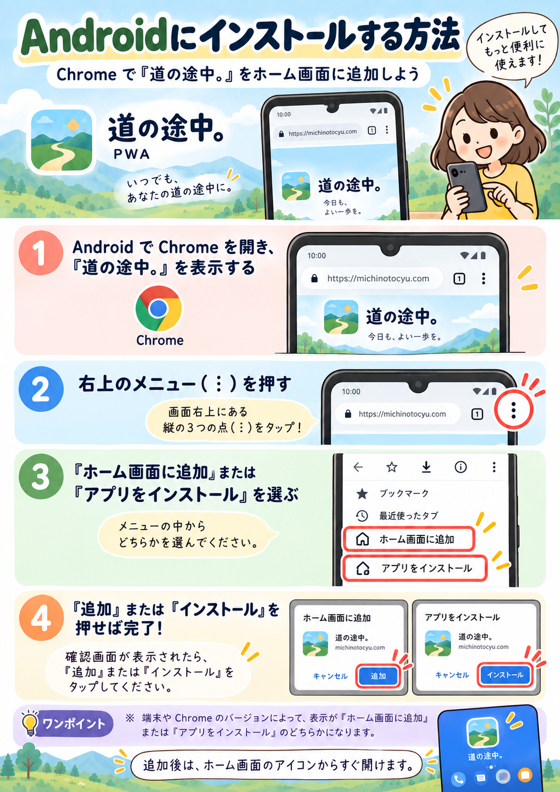
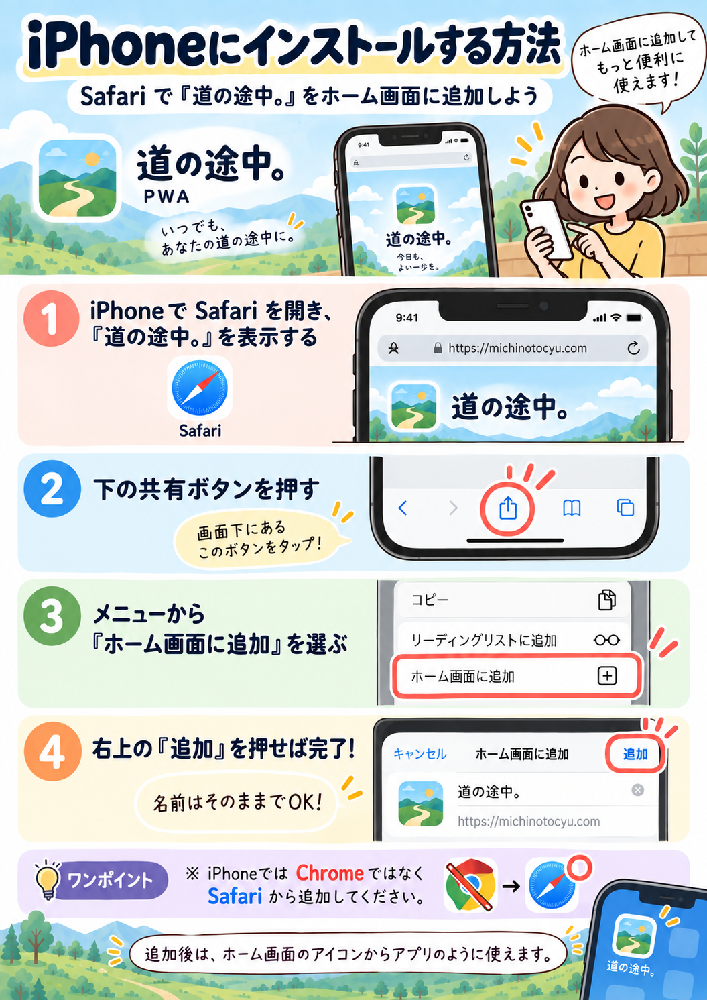

「道の途中。」インストール方法
PC・Android・iPhone、どの端末でも使えます。
お使いの端末を選んで、案内画像を保存してください。





📌 iPhoneでは、端末の仕様により「PNGを保存」を押したあと画像表示になる場合があります。その場合は画像を長押しして「写真に保存」を選んでください。
PC・Android・iPhone、どの端末でも使えます。
お使いの端末を選んで、案内画像を保存してください。


